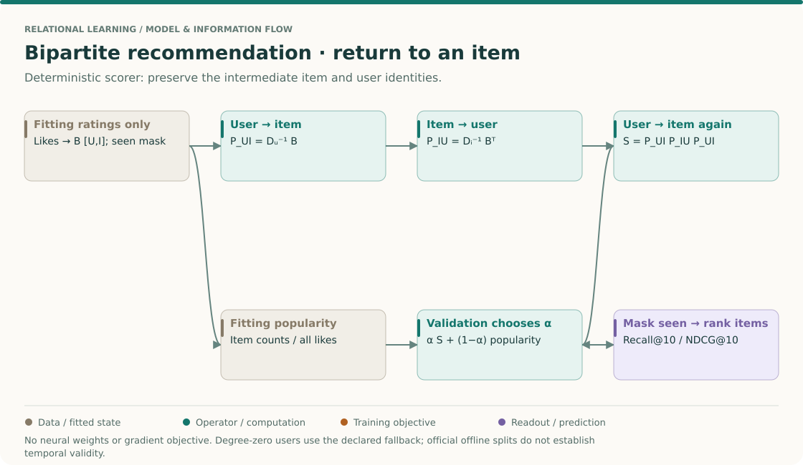
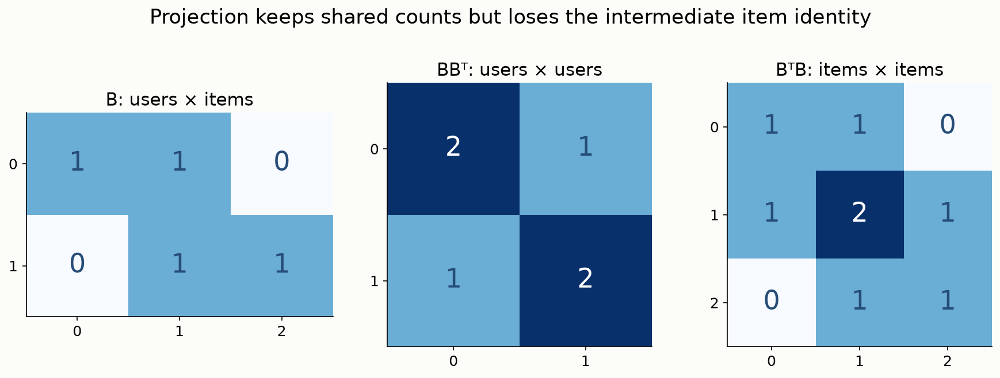
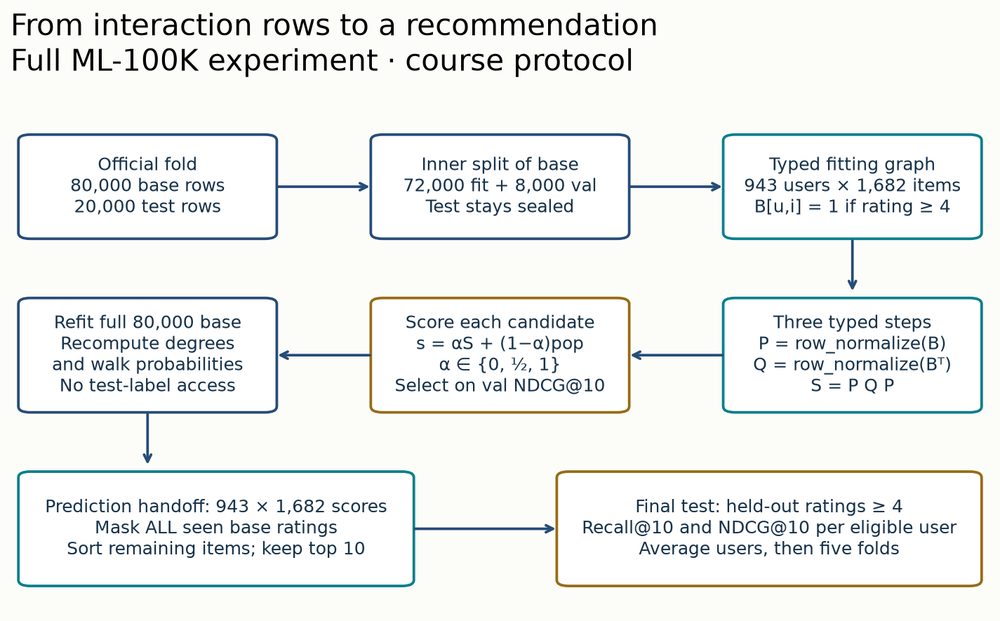
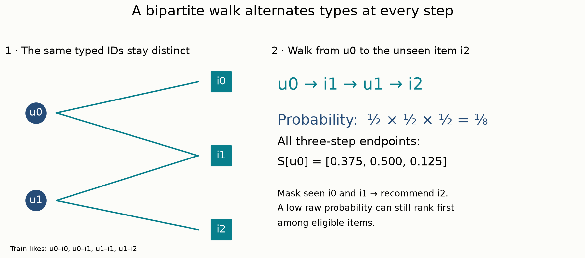
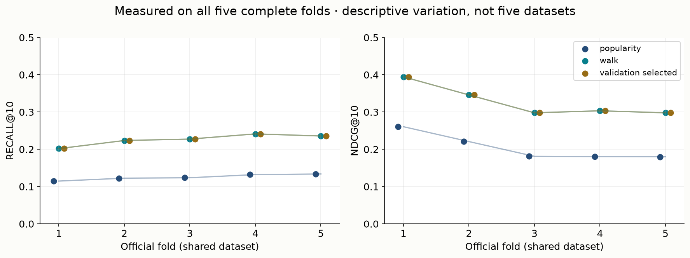

Year 3 · Quarter 2 · Lesson 095
Bipartite graphs: from interactions to recommendations
Student notebook · Executed lab · Reference sheet · Reproduction contract
1 · Retrieve before reading¶
Close the preceding lessons. Write three answers: What distinguishes an edge used for message passing from an edge used as a prediction label? Why is a reverse relation still information about the original interaction? What does an off-diagonal entry of a two-step path matrix count?
Check after attempting
A message-passing edge is visible input to an encoder; a prediction label is an outcome whose availability depends on the split. A reversed rating identifies the same user–item event. In an unweighted graph, an off-diagonal two-step product counts connecting length-two walks, such as shared items. Correct recognition is not yet a written defense.
The bridge. L087 separated graph input, targets and ranking candidates. L091 made relation meaning explicit; L094 separated routes from encoders. Here there are only two entity types, but that simplicity does not choose the target or the evaluation protocol for us. This is the foundation for database recommendation in L138 and L144.
Core route: sections 2–6 establish the graph and one prediction. Then complete the three notebook tasks. Sections 7–9 explain the full experiment and evidence. Ask the agent about any step that you cannot trace yourself.
The big picture · recommendation needs a path back to items¶
THE BIG PICTURE · 095 / TYPED INTERACTIONS
Bring forward: L092 separated path instances from endpoint projections. Here users and items occupy different identity spaces. Follow: fitting interactions → normalized transitions → three-hop item scores → seen-item mask → ranking metric. Carry forward: L097 replaces this fixed scorer with a learned pairwise scorer while keeping candidate eligibility explicit.
L092: projected neighborhoods · L087: hidden edge boundaries · L097: learned ranking · Sequence map

Start with the output shape¶
For U users and I items, a recommender must eventually produce scores indexed by (user,item). A user–user matrix is not that output, even when it captures useful similarity. This shape check forces an explicit final operation that returns from similar users to candidate items. Keep the types beside every multiplication: [U,I] × [I,U] × [U,I] → [U,I].
The first transition chooses an item associated with the starting user. The second chooses another user associated with that item. The third chooses an item associated with that user. Intermediate identities remain meaningful, and degree normalization decides how much probability each step contributes. The diagram shows a deterministic baseline: its counts are fitted state, but it has no learned neural weight matrices or training loss.
Work through the mass, then apply eligibility¶
Use two users and three items: u0 likes i0/i1; u1 likes i1/i2. Starting from u0 gives first-hop probabilities [1/2,1/2,0]. The first item returns to u0 with certainty; the shared item divides its mass between u0 and u1. After two steps, user probabilities are [3/4,1/4]. One more user-to-item step gives [3/8,1/2,1/8].
Those scores sum to one before masking. Masking the two seen items leaves only i2 eligible, with score 1/8. Ranking does not require renormalizing the remaining mass to one. If you do renormalize for presentation, do not mistake the new number for a calibrated purchase probability. The model describes a walk on observed likes, not an exposure or causal preference model.
Now compare a two-hop user projection. B Bᵀ gives [[2,1],[1,2]]. It preserves shared-item counts, but the value 1 does not name the shared item. A high-degree item creates many user pairs and can inflate projection size. Preserving the bipartite graph keeps the normalization at each actual step inspectable.
One interaction has several representations¶
A raw rating row has user, item, rating and timestamp. The fitting graph retains likes under the stated threshold; the seen mask retains every fitting-rated item, including dislikes. These structures answer different questions. A low rating may contribute no positive walk edge while still excluding an item from recommendations. Derive both from the same fitting partition, not from the full release.
The GroupLens README defines the release and split files. It does not declare this course's like threshold, mixture-selection rule or ranking protocol. Keep released facts distinct from our experimental choices. Likewise, a successful official-split audit does not establish a valid future-purchase evaluation.
Predict first: what if a held-out like remains only in the reverse store?
The graph still contains the withheld fact. A message or walk can use its reverse direction even if the forward entry was removed. Split raw interaction identities first and generate both directions from the allowed fitting rows.
Bridge to L096 and L097. Database association rows may represent repeated events, quantities or timestamps; collapsing them to one binary edge loses those distinctions. A learned ranking objective then chooses which unobserved pairs to compare against positives. Before either extension, defend the current scorer's cold-user fallback, catalog mask and metric denominator. Ask the teacher to change one of those assumptions and predict which number in the trace moves.
2 · Begin with a row, not a network¶
Worked example. An interaction row is (user=17, item=17, rating=5, timestamp=t). The repeated number does not identify one entity. user:17 and item:17 live in separate namespaces. A bipartite graph has two disjoint node sets, users U and items I, and every edge connects the sets. There are no direct user–user or item–item edges in this representation.
Choose edge meaning. A rating event records an observed rating. A like in this lab means a rating of at least four. Those are different relations. We keep all observed rating rows for exclusion rules, but only likes become graph edges. A rating of one is therefore absent from the likes graph and still known to the system. An unobserved pair has no observed rating; it is not a proven dislike.
Choose event policy. MovieLens 100K has one row per user–item pair; our full audit checks that. If a purchase log repeats pairs, decide whether you predict first purchase, repeat purchase, counts or individual events before collapsing rows. Summing repeated interactions and silently calling the result binary changes the task.
The tool contract. PyG HeteroData stores node types separately and indexes a relation with a (source type, relation, destination type) triple. Each edge_index column holds one pair of type-local IDs. Here the forward relation is ('user','likes','item'); its reverse is ('item','rev_likes','user'). Store node counts explicitly so isolated users and items are retained. PyG heterogeneous data guide.
# Type-local IDs; zero-based after loading the release.
graph['user'].num_nodes = 943
graph['item'].num_nodes = 1682
# edge_index has shape [2, number_of_likes].
# Its first row indexes users; its second row indexes items.
In plain terms. A user and a movie may share the number zero without being the same thing. Adding an edge
(0,0)connects two entities; it is not a self-loop.
3 · See what a projection keeps—and throws away¶
Let B be the binary user–item matrix. It has one row per user, one column per item, and B[u,i]=1 exactly when fitting data contains a like. The transpose Bᵀ swaps rows and columns. In our worked graph, u0 likes i0 and i1; u1 likes i1 and i2.

Multiplying B by Bᵀ gives a user–user matrix. Entry (u,v) sums B[u,i]B[v,i] across items i, so it counts shared liked items. In the figure, users 0 and 1 share exactly one item. The diagonal entry is two because each user likes two items. BᵀB similarly counts shared users between items. These are projections: derived same-type relations, not original user–item interactions.
Why keep the original graph? The count one does not say whether the shared item was i0, i1 or i2. Relabeling item columns leaves BBᵀ unchanged. A popular item also creates many user pairs: an item liked by d users connects d(d−1)/2 unordered distinct pairs in a binary user projection. This can make a sparse interaction table yield a dense derived graph. Keeping B preserves the intermediate identity and allows normalization at the item step.
Checkpoint. If B has shape 943×1682, what are the shapes of BBᵀ and BᵀB? Which one can directly name a recommended item? Answer: 943×943 and 1682×1682. Neither alone is a user–item score matrix; you need an explicit handoff back to items.
4 · Split interaction identities before constructing graph views¶
In plain terms. Hiding the answer means hiding every graph view that reveals the answer.
Separate three objects:
- Fitting graph: likes observed in fitting rows, plus their exact reversed copies. Degrees, transitions and popularity are computed here.
- Target rows: held-out interactions used to assess predictions. Likes among these rows define relevant items.
- Candidate set: items the recommender is allowed to rank. Here it is the fixed catalog minus every item this user already rated in fitting data.
If (u0,i2) is held out, remove it from the forward graph and remove (i2,u0) from the reverse graph. Constructing both directions from an already-split fitting table is easier to audit than deleting individual columns from two independently built stores. The notebook task compares the pair sets and rejects held-out overlap.
Library trap. If you use PyG RandomLinkSplit, explicitly pair edge_types and rev_edge_types. Its is_undirected option alone is ignored for bipartite edge types. disjoint_train_ratio separately controls whether training supervision edges are shared with the training message graph. Our experiment uses the official release files and no learned edge classifier, so it does not replace them with this transform. PyG 2.8.0 RandomLinkSplit.
Time is another boundary. The official splits are offline rating-completion splits, not a forecasting simulation. Training rows can occur later than a target's timestamp. Reusing their scores as evidence for “predict the next purchase” would change the claim. A temporal experiment needs a cutoff, point-in-time features, catalog availability and an explicit repeat-event policy. IDs being known does not make future interactions admissible.
5 · Model architecture: a transparent three-hop baseline¶
This lesson introduces a deterministic graph scorer, not a neural architecture. Its fitted state consists of counts and transition probabilities. There are no learned embeddings, loss gradients, epochs or optimizer. The selection objective is validation NDCG@10, defined below. Popularity provides a baseline with no user-specific walk.

Step 1: normalize outgoing choices. A walk chooses uniformly among a user's liked items. If dᵤ is that user's fitting like count, P[u,i]=B[u,i]/dᵤ. An item then chooses uniformly among its liking users: Q[i,u]=B[u,i]/dᵢ, where dᵢ is its fitting like count. P has shape U×I and Q has shape I×U. Zero-degree rows initially contain zeros.
Step 2: compose typed steps. The product S=PQP has shape U×I. Each entry adds probabilities of all user→item→user→item walks with those endpoints. The matrix PQ is a normalized user–user intermediate, but the final multiplication returns to items. The mechanism therefore retains the bipartite route throughout the computation.

Worked trace. In the pictured graph, u0→i1 has probability 1/2. Item i1 chooses u1 with probability 1/2. User u1 chooses i2 with probability 1/2. This is the only three-step path from u0 to i2, so S[u0,i2]=1/8. Summing all paths gives S[u0]=[3/8,1/2,1/8]. Once i0 and i1 are masked as seen, i2 ranks first.
Cold users and zero-degree items. A user with no fitting likes gets the fitting-popularity distribution. Popularity is an item's fitting like count divided by the total fitting likes. With no likes anywhere, use a uniform catalog distribution. An item with zero fitting likes receives zero walk/popularity mass, but remains a candidate. Item-ID tie-breaking makes that behavior reproducible; it is not a useful cold-item model.
Visible implementation map. In the notebook, build_graph implements typed identity and both edge views; assert_boundary enforces the split; walk_scores implements the three transitions. These are your three live tasks. The provided rank_metrics and run_experiment call those functions directly. No imported model hides the computation.
6 · A good score needs a defined denominator¶
A recommender produces an ordered list of eligible item IDs. Here we score all 1,682 catalog items and exclude every fitting-rated item for the user, including low ratings. We do not sample a small set of convenient negatives. Unobserved candidates count as nonrelevant for this offline metric because relevance is defined by held-out likes; that convention does not establish real-world dislike.
Recall@10. For a user, divide the number of relevant items in the top ten by their total number of held-out relevant items. If two relevant items exist and one is retrieved, recall is 1/2. The result rewards finding more of the user's held-out likes.
NDCG@10. Discount a relevant item at rank r by 1/log₂(r+1), with ranks starting at one. Sum those contributions over the top ten to get DCG. Divide by the ideal DCG, which would place up to ten relevant items first. NDCG therefore rewards placing relevant items earlier. With two relevant items and only rank one relevant in top two, DCG=1, ideal DCG=1+1/log₂(3), and NDCG≈0.613.
Macro averaging. Compute each eligible user's metric, then average users equally. Users with no held-out likes are excluded and counted explicitly; assigning them zero would change the question. We report each official fold and the mean across folds. Deterministic score ties prefer the smaller item ID. These choices are part of the experiment, not evaluator trivia.
CHECK before running. If the top-scoring item was already rated one star in training, is it eligible? No: absence from the likes graph does not erase its observed status. If the target pair already occurs in fitting data, the evaluator rejects the experiment instead of concealing the overlap with a mask.
7 · Full reproduction: exactly what was run¶
Primary source assignment. Read the GroupLens ML-100K README, especially u.data and u1.base through u5.test, then inspect the notebook audit. The released data contain 100,000 ratings, 943 users and 1,682 items; each user has at least 20 ratings. The five supplied splits contain 80,000 fitting and 20,000 test rows each, with disjoint test sets. The audit checks those targets, uniqueness, full row content and reconstruction—not just file sizes.
Published target: complete data contract. All counts and all five partitions matched. The minimum observed rating count per user was exactly 20. The five test sets collectively reconstruct all 100,000 original rows. Archive and member SHA-256 fingerprints are in the source manifest.
Course experiment: complete recommendation protocol. Within each official base, reserve 8,000 rows for validation with declared seed 9501–9505; fit on 72,000. Select α from {0,½,1} using mean validation NDCG@10 for the score αS+(1−α)pop. Ties prefer lower α. Refit counts and transitions on all 80,000 base rows, freeze α, and evaluate the complete official test once per predeclared arm. No test tuning, reduced catalog or early stopping is used.
| Method | Recall@10, mean ± fold SD | NDCG@10, mean ± fold SD |
|---|---|---|
| popularity | 0.1254 ± 0.0078 | 0.2046 ± 0.0359 |
| walk | 0.2260 ± 0.0152 | 0.3279 ± 0.0423 |
| validation selected | 0.2260 ± 0.0152 | 0.3279 ± 0.0423 |
| Official fold | Eligible test users | Excluded: no held-out likes | Selected α |
|---|---|---|---|
| 1 | 456 | 487 | 1 |
| 2 | 644 | 299 | 1 |
| 3 | 849 | 94 | 1 |
| 4 | 890 | 53 | 1 |
| 5 | 878 | 65 | 1 |
Frozen author-reference measurements; not output from your current notebook kernel. The official folds have different eligible user populations. We retain their released assignments; fold variation includes this composition difference.

All five folds selected α=1. The selected arm therefore equals the pure walk; it is not a third independent method. The source and full executed evidence record every validation score, fold denominator, source hash and environment. Raw top-ten lists support independent metric reconstruction.
Scope check. These five folds share one dataset and overlapping training data. Their standard deviation describes fold variability; it is not a confidence interval across datasets. The walk beats popularity here, under this protocol. That does not establish that graph neural networks beat tabular models, that relational learning wins broadly, or that a historical model score was reproduced.
No missing model-paper claim. The roadmap assigns no model paper to L095. The release audit is MATCH; the complete course experiment is MEASURED. Historical model-score parity is NOT_ESTABLISHED because no corresponding published score/protocol is claimed. Reproducing a later LightGCN or other recommender paper would require that paper's actual model, datasets, split, optimization, selection and metric—not relabeling these numbers. See the protocol/deviation ledger.
8 · Lab: implement the contract, then break it deliberately¶
Open the student notebook. It contains the complete loader, scorer, evaluator and full five-fold experiment, with portable figures and frozen author-reference results labeled separately from fresh execution.
- TODO 1 — typed graph. Validate local IDs, retain isolated nodes, include only fitting likes, and derive the reverse relation. CHECK includes a same-number user/item pair.
- TODO 2 — information boundary. Compare both directed stores as user–item pairs, then reject held-out overlap. CHECK corrupts only the reverse store.
- TODO 3 — walk. Normalize by the appropriate outgoing degree at each type, compose three steps, and supply the declared cold-user fallback. CHECK independently enumerates the tiny graph's routes.
- Experiment. Run all official folds with your functions; inspect validation selection, full-catalog ranking, per-user denominators and result tables. Predict why removing the shared-item bridge changes the tiny walk before executing the intervention.
9 · EXIT: defend the graph before claiming the score¶
Submit your complete run and a short written defense: define the two namespaces; distinguish observed ratings, likes and unknown pairs; explain why reverse edges share a split; state what a projection discards; trace the three-step probability; name the candidate and user denominators; separate the matched published data contract from the course ranking result. Then propose the time cutoff and event policy needed for next-purchase prediction.
Learner status remains PENDING_WRITTEN_DEFENSE. Prepared notebooks and teacher execution do not establish your mastery. Revisit the typed-ID and reverse-leakage questions tomorrow without looking, then trace a different graph one week later.
Next bridge. L096 generalizes two entity tables and an interaction relation into SQL primary-key/foreign-key semantics. L097 studies negative sampling, where changing candidates can change the apparent quality of a recommender. This lesson keeps the full catalog so that boundary is explicit.